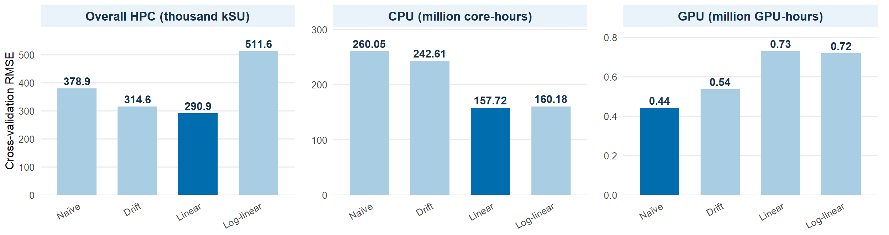
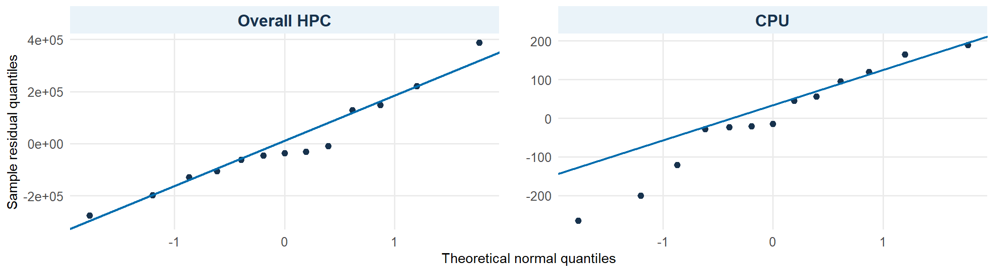
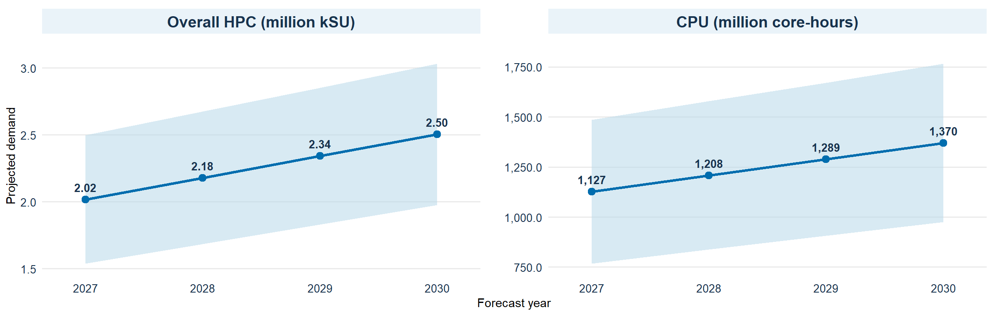
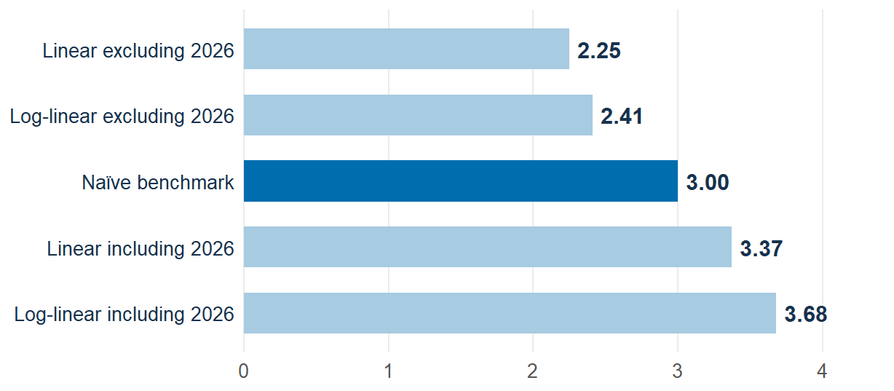

Forecasting Demand for National Research Supercomputing
Australian HPC Demand to 2030
Yusuf Kurnia Romadhon
21 October 2026
Understanding Supercomputing Demand and Project Objectives
What is Supercomputing (HPC)?
High-performance computing (HPC) uses thousands of processors working together to solve complex problems.
How does it work? CPUs handle general computing tasks, while GPUs accelerate highly parallel calculations.
Research applications: Drug discovery, climate modelling, weather forecasting, and engineering simulations.
Understanding Computing Resources Term
- Demand (Requested): Computing resources researchers request.
- Allocation: Computing resources awarded to researchers.
- Unmet demand: Requests not fulfilled, when the measures are comparable.
Project Objective
To develop demand projections and alternative scenarios through 2030 for Australia’s national research supercomputing infrastructure, helping inform future HPC planning under uncertainty.
Historical HPC Data: Sources, Coverage & Reliability
Primary data sources
NCI & Pawsey: Historical computing records
NCMAS: Annual allocation results
Historical coverage
Overall HPC & CPU: 2014 - 2026 (13 years)
GPU: 2022 - 2026 (5 years)
Fields of Research: 2014 - 2026 (allocation shares)
Historical provenance: overall HPC demand and allocation, 2014 - 2026
| Measure | 2014 | 2015 | 2016 | 2017 | 2018 | 2019 | 2020 | 2021 | 2022 | 2023 | 2024 | 2025 | 2026 |
|---|---|---|---|---|---|---|---|---|---|---|---|---|---|
| Demand | Direct | Derived | Derived | Proxy | Derived |
Derived proxy |
Derived proxy |
Derived proxy |
Derived proxy |
Direct |
Derived proxy |
Derived proxy |
Direct |
| Allocation | Direct | Direct | Direct | Proxy | Direct | Proxy | Direct | Direct | Direct | Direct | Direct | Direct | Direct* |
Direct Reported target measure
Derived Calculated from reported values
Proxy Alternative observed measure
Derived proxy Proxy-based calculation with assumptions
Key takeaway: Historical allocation is mostly reported directly, while demand frequently requires reconstruction. Differences in data provenance, reporting scope and units affect the interpretation of forecasts.
Limitations: Reporting units, facility coverage and estimation methods differ across years. *2026 allocation excludes 12,000 kSU for Setonix Q to align with the published demand scope. Categories describe how values were constructed, not statistical accuracy.
Sources: (National Computational Infrastructure 2014a, 2021; Pawsey Supercomputing Research Centre 2017; National Computational Merit Allocation Scheme 2023, 2026). Provenance classifications: project data harmonisation and reconciled historical demand/allocation workbook.
Historical Computing Demand by Resource Type
Overall HPC
2023 - 2026: Official requests increased 68%, while available resources increased only 6%.
2026: Requests were 2.69 times the available resources.
Estimated demand growth of 43.3% depends on the reconstructed 2025 value.
CPU
CPU demand generally increased, but with some sharp changes.
2019 - 2020: Raijin transitioned to Gadi.
2022 - 2023: Magnus transitioned to Setonix. These system changes may affect historical comparisons.
GPU
2023 - 2026: Official Setonix GPU requests increased 123% in service units (kSU).
GPU demand is growing, but historical GPU-hour estimates are less reliable.
Interpretation: Historical series include reported and estimated values. GPU values before 2022 are assumption-based historical scenarios, not observed demand or statistical confidence intervals. System transitions may affect comparability but are not confirmed causes of demand changes. The 2025 HPC estimate affects reconstructed 2026 growth. The 2026 HPC allocation excludes 12,000 kSU for Setonix Q. Panel units and scales differ.
Sources: (National Computational Merit Allocation Scheme 2026; National Computational Infrastructure 2025, n.d.-b; Pawsey Supercomputing Research Centre, n.d.-b, n.d.-a). Historical series and GPU scenarios: project data harmonisation.
HPC Allocation by Field of Research
2014–2026 | Annual allocation composition

2014–2020 | Average annual share (FoR 2008-based)

2021–2026 | Average annual share (FoR 2020-based)

2014–2020 | Earth & Environmental
32% average share. Climate, weather and geoscience are established national HPC workloads. This provides context for the field’s historical concentration, but does not identify the projects driving each year.
2021–2026 | Engineering
35% average share; a peak of 41% in 2022. NCMAS documents large computational engineering projects, including turbine and fluid-flow simulations. Their contribution to annual shares requires project-level verification.
Why the apparent shift needs caution
The comparison crosses FoR 2008 and FoR 2020 classifications. Category changes, harmonisation choices and the different 2017 Pawsey reporting scope limit direct interpretation as a change in research priorities.
Note: Shares represent allocations, not demand. FoR 2008/2020 classification changes and differences in reporting coverage limit direct comparisons across years.
Sources: NCI and Pawsey allocation reports (National Computational Infrastructure 2014a, 2021; National Computational Merit Allocation Scheme 2023, 2026). Classification and research context: (Australian Bureau of Statistics 2020; National Computational Infrastructure, n.d.-a, 2023).
Model Development: Growth Assumptions & Sensitivity
Why simple models? I have 13 years of HPC and CPU data (2014 - 2026) and only 5 years of GPU data (2022 - 2026). I compared four simple forecasting models.
Naïve | No growth
\hat{D}_{T+h}=D_T
Future demand stays at the latest level.
Drift | Average growth
\hat{D}_{T+h}=D_T+h\frac{D_T-D_1}{T-1}
Extends the average yearly change.
Linear | Fixed annual growth
D_t=\alpha+\beta t+\varepsilon_t
Assumes a constant yearly change.
Log-linear | Percentage growth
\log(D_t)=\alpha+\beta t+\varepsilon_t
Assumes a constant percentage growth rate.
Sensitivity Analysis | How much does 2026 affect the trend?
I fitted the linear model twice: first without 2026, then with 2026. I compared the estimated annual growth.
| Resource | Without 2026 | With 2026 | Change |
|---|---|---|---|
| Overall HPC | 144,357 kSU/year | 161,992 kSU/year | +12.2% |
| CPU | 72.41M core-hours/year | 81.01M core-hours/year | +11.9% |
| GPU | 0.012M GPU-hours/year | 0.172M GPU-hours/year | Highly sensitive |
Key finding: Including 2026 increases the estimated annual growth by around 12% for HPC and CPU. GPU results are much more sensitive because only five years of data are available.
Fields of Research (FoR): I first forecast total HPC demand for 2030, then apply the average allocation shares from 2021 - 2026 to create scenarios for each research field. These are allocation-share-based scenarios, not separate forecasts of FoR demand.
Note: GPU models use only 2022 - 2026 data. Sensitivity shows changes in fitted growth rates, not forecast accuracy.
Methods: Naïve, drift, linear and log-linear models (Hyndman and Athanasopoulos 2021). Sensitivity results: project calculations.
Model Evaluation: Forecast Accuracy
How did I compare the models? I tested how well each model predicted the next year using historical data.
Method: Expanding-window, one-step-ahead cross-validation. Train on earlier years, predict the next year, then repeat with more data.
Accuracy: RMSE measures forecast errors and gives more weight to large mistakes. MAE measures average absolute error. Lower is better.

Overall HPC
Best: Linear
RMSE: 290,898 kSU
MAE: 198,295 kSU
Based on 6 evaluation years.
CPU
Best RMSE: Linear
RMSE: 157.72M core-hours
Lowest MAE: Log-linear, 133.74M core-hours
GPU
Best: Naïve
RMSE: 0.441M GPU-hours
Only 2 evaluation years, so results are uncertain.
Key finding: The linear model had the lowest RMSE for HPC and CPU, while the naïve model performed best for GPU. These short-term results do not guarantee accuracy through 2030.
Notes: RMSE shown in chart. HPC and CPU use six one-year-ahead errors (2021–2026); GPU uses two (2025–2026). Panel units and scales differ. Methods: (Hyndman and Athanasopoulos 2021, chap. 5). Results: Project model evaluation.
Model Diagnostics: Checking the Linear Models
What did I check? After selecting linear models for overall HPC and CPU, I examined their residuals using Q–Q plots and Ljung–Box tests.
Q–Q plots check whether residuals are approximately normally distributed. Ljung–Box tests check whether residuals are correlated across years.
Residual Diagnostics: Overall HPC and CPU

Overall HPC
Ljung–Box test (lag 2): p = 0.8775
No significant autocorrelation detected. The Q–Q plot shows some departures from normality.
CPU
Ljung–Box test (lag 2): p = 0.3608
No significant autocorrelation detected. The Q–Q plot also shows some departures from normality.
Key finding: Neither Ljung–Box test detected significant autocorrelation. However, the small sample and departures from normality mean that the 2030 prediction intervals should be interpreted cautiously.
Notes: Diagnostics use residuals from the full-history linear models. Non-significant tests do not prove residual independence. Prediction intervals remain conditional on model assumptions. Methods: (Hyndman and Athanasopoulos 2021). Results: Project model diagnostics.
Projected Computing Demand, 2027 - 2030
Forecast approach: Full-history linear models provide the selected annual projections for 2027 - 2030, based on cross-validation performance. Shaded areas represent 95% prediction intervals conditional on the fitted models, rather than alternative growth scenarios.

Overall HPC - 2030
2.50 million kSU
+11.6% compared with 2026
95% prediction interval: 1.98 - 3.03 million kSU.
Estimated annual increase: 161,992 kSU.
CPU - 2030
1,369.90 million core-hours
+10.9% compared with 2026
95% prediction interval: 974.24 - 1,765.55 million core-hours.
Estimated annual increase: 81.01 million core-hours.
Key finding: The selected models project approximately 2.50 million kSU of overall HPC demand and 1.37 billion CPU core-hours by 2030. Both indicate continued growth, but widening prediction intervals and sensitivity to growth assumptions mean these should be interpreted as planning estimates, not precise capacity requirements.
Notes: Forecasts reproduce the project’s Chapter 10 results using historical observations through 2026. Percentage changes use reconstructed 2026 baselines. Prediction intervals are conditional on the fitted linear models and do not capture all uncertainty in historical reconstruction, future technology or model choice. Log-linear scenarios are not upper prediction bounds. Panel scales differ.
Source: Project scenario forecasting analysis, Chapter 10. Methods: (Hyndman and Athanasopoulos 2021).
GPU Demand and Research Field Scenarios to 2030
Scenario approach: GPU projections compare alternative growth assumptions using only five annual observations (2022 - 2026). Research-field scenarios apply historical allocation shares to the selected 2030 national HPC demand projection.
GPU: Exploratory 2030 scenarios
Million GPU-hours under alternative forecasting assumptions

The naïve benchmark had the lowest one-step-ahead RMSE, but evaluation covered only two years.
Alternative assumptions produce 2.25 - 3.68 million GPU-hours in 2030. This range illustrates model sensitivity, not a statistical prediction interval.
Research-field allocation-share scenarios
Illustrative distribution of projected 2030 national demand using historical allocation shares
Calculation: 2030 national HPC demand × recent FoR allocation share
Example: 2,500,000 kSU × 33.28% = 832,000 kSU (Engineering & Technology)
| Research field | 2014–20 | 2021–26 | 2030 kSU* |
|---|---|---|---|
| Engineering & Technology | 16.24% | 33.28% | 832,000 |
| Earth & Environmental Sciences | 30.38% | 13.36% | 334,000 |
| Physical Sciences | 16.26% | 21.11% | 527,750 |
| Chemical Sciences | 18.28% | 17.02% | 425,500 |
The 2021 - 2026 shares provide the recent reference scenario; 2014 - 2020 shows historical differences, with comparisons affected by the ANZSRC classification change.
These are conditional illustrative allocations, not independent forecasts of field-level researcher demand.
Planning implication: These results provide a transparent starting point for national HPC planning, but GPU projections remain sensitive to modelling assumptions and research-field estimates depend on historical allocation patterns. More detailed demand and usage data would support more reliable, field-specific forecasts.
Notes: GPU scenarios are not statistical prediction intervals. The naïve benchmark holds estimated 2026 GPU demand constant. *2030 FoR values apply 2021 - 2026 allocation shares to the rounded 2.50 million kSU national HPC projection; only four research fields are shown. Historical FoR comparisons span the ANZSRC 2008/2020 classification change. Allocation shares are not direct measures of researcher demand.
Source: Project scenario forecasting analysis, Chapter 10.
Key Findings and Next Steps for National HPC Planning
This project provides a reproducible starting point for national HPC demand forecasting. Further collaboration with NCI and Pawsey to harmonise demand data would strengthen future planning and investment decisions.
What the analysis found
What the Academy can do next
Overall HPC: 2.50 million kSU by 2030
Selected linear projection; 95% prediction interval: 1.98 - 3.03 million kSU.
Establish a national planning baseline
Use the projection and its uncertainty range as an initial planning scenario, not a fixed infrastructure capacity target.
CPU: 1.37 billion core-hours by 2030
Selected linear projection; 95% prediction interval: 0.97 - 1.77 billion core-hours.
Plan CPU requirements separately
Use CPU core-hours alongside overall HPC service units, recognising differences in resource accounting and comparability.
GPU: Longer-term forecasts remain uncertain
Only five annual observations (2022 - 2026); the naïve model achieved the lowest RMSE across just two one-step-ahead evaluations.
Retain GPU scenarios, not a single target
Use the naïve benchmark for comparison and refine projections as longer, more detailed GPU demand and usage records become available.
FoR: Engineering leads recent allocations
Engineering & Technology accounts for 33.28% and Physical Sciences for 21.11% of 2021 - 2026 allocation shares.
Develop research-field demand evidence
Use historical allocation shares for illustrative scenarios while working towards consistent, directly observed field-level demand data.
Data comparability is a key challenge
Historical NCI and Pawsey data differ in reporting scope, resource units and accounting conventions, requiring transparent harmonisation assumptions.
Build a consistent national demand dataset
Standardise units and definitions; distinguish requests, allocations and fulfilment; and document conversion rules and data provenance.
Recommended next step: The Academy can build on this project’s data-integration workflow, forecasting models and scenario framework as a proof of concept, collaborating with NCI and Pawsey to refine national HPC demand estimates as more detailed data become available.
Notes: HPC and CPU projections use selected linear models including 2026; 95% prediction intervals are conditional on model assumptions. GPU scenarios are exploratory. FoR percentages represent historical allocation shares, not directly observed demand. Overall HPC service units and CPU core-hours are different accounting measures. Source: Project data integration, standardisation and forecasting analyses, Chapters 03 - 10.
References
Australian Bureau of Statistics. 2020. “Australian and New Zealand Standard Research Classification (ANZSRC), 2020.” https://www.abs.gov.au/statistics/classifications/australian-and-new-zealand-standard-research-classification-anzsrc/2020.
Hyndman, Rob J., and George Athanasopoulos. 2021. Forecasting: Principles and Practice. 3rd ed. OTexts. https://otexts.com/fpp3/.
IBM. n.d. “What Is High-Performance Computing (HPC)?” Accessed October 14, 2026. https://www.ibm.com/think/topics/hpc.
National Computational Infrastructure. 2014a. Annual Report 2013/14. https://nci.org.au/sites/default/files/annual-reports/2019-07/About%20Us_Annual%20Reports_2013-14.pdf.
National Computational Infrastructure. 2014b. “NCMAS Information for Applicants.” https://nci.org.au/news-events/news/ncmas-information-applicants.
National Computational Infrastructure. 2020. NCMAS 2020 Information for Applicants. https://nci.org.au/sites/default/files/documents/2019-10/NCMAS-2020-InformationForApplicants.pdf.
National Computational Infrastructure. 2021. Compute Allocations 2020–2021. https://nci.org.au/sites/default/files/annual-reports/2021-12/NCI%20Compute%20Allocations%202020-2021_0.pdf.
National Computational Infrastructure. 2022. NCMAS 2023 Information for Applicants. https://my.nci.org.au/mancini-assets/media/mas/ncmas/2023/NCMAS2023-NCMAS_2023_Info4Applicants_v5-20220830T164026AEST.pdf.
National Computational Infrastructure. 2023. “National Supercomputing Grants Support More Science Than Ever.” https://nci.org.au/news-events/news/national-supercomputing-grants-support-more-science-ever.
National Computational Infrastructure. 2025. NCMAS 2026 Information for Applicants. https://my.nci.org.au/mancini-assets/media/mas/ncmas/2026/NCMAS2026-Information_for_Applicants-20251023T122535AEDT.pdf.
National Computational Infrastructure. n.d.-a. “Earth and Environmental Science.” Accessed October 18, 2026. https://www.nci.org.au/research/case-studies/earth-and-environmental-science.
National Computational Infrastructure. n.d.-b. HPC Systems. Accessed October 18, 2026. https://nci.org.au/infrastructure/hpc-systems.
National Computational Merit Allocation Scheme. 2023. “NCMAS 2023 Outcomes.” https://my.nci.org.au/mancini/ncmas/2023/outcomes.
National Computational Merit Allocation Scheme. 2026. “NCMAS 2026 Outcomes.” https://my.nci.org.au/mancini/ncmas/2026/outcomes.
Pawsey Supercomputing Research Centre. 2017. Annual Report 2016/17. https://pawsey.org.au/wp-content/uploads/2018/10/Pawsey-Annual-Report-2016-2017.pdf.
Pawsey Supercomputing Research Centre. n.d.-a. Changes in Supercomputing Services for 2023. Accessed October 18, 2026. https://pawsey.atlassian.net/wiki/spaces/US/pages/51927586/Changes+in+Supercomputing+Services+for+2023.
Pawsey Supercomputing Research Centre. n.d.-b. Setonix Fires up for Researchers. Accessed October 18, 2026. https://pawsey.org.au/setonix-fires-up-for-researchers/.
Appendix: How Was Historical HPC Demand Standardised?
Three Steps to Make Historical Data Comparable
Step 1 | Identify
Identify the computing system and its reporting units: kSU, CPU core-hours or GPU-hours.
Step 2 | Convert
Use conversion factors for each system to calculate CPU core-hours or GPU-hours.
Step 3 | Combine
Combine compatible data by year, keeping CPU and GPU separate.
System-Specific Conversion Rules
| Supercomputer | Conversion from kSU | Output |
|---|---|---|
| Raijin CPU* | kSU × 1,000 ÷ 1 | CPU core-hours |
| Gadi CPU | kSU × 1,000 ÷ 2 | CPU core-hours |
| Setonix CPU | kSU × 1,000 ÷ 1 | CPU core-hours |
| Setonix GPU | kSU × 1,000 ÷ 128 | GPU-hours |
*Raijin uses an assumed historical conversion factor. These are the rules used in this project; they may vary by system and reporting year.
Important: Service units (kSU) are system-specific. Some historical conversions rely on assumptions, so comparisons across years require care.
Sources: NCMAS information for applicants (National Computational Infrastructure 2014b, 2020, 2022, 2025). Conversion factors: project year-by-year conversion methodology.